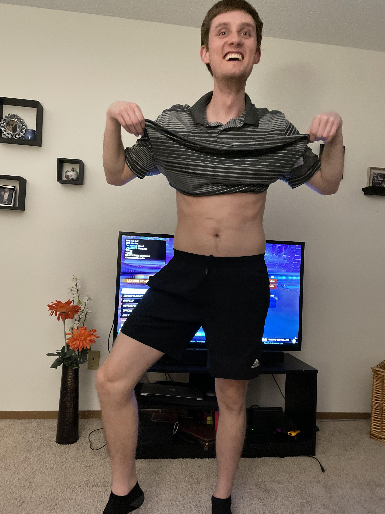

This is a specially designed meal regimen based off what I eat on a regular basis. Making these meals has taken years to master, but it has paid off tremendously. See below for a picture of myself. As you can see I'm in near perfect condition. The judges at the National Body Builder Qualifier of the Midwest would not allow my entry last year as they said it was for amateurs only.
If you want to have a body like this stick to my regimen!